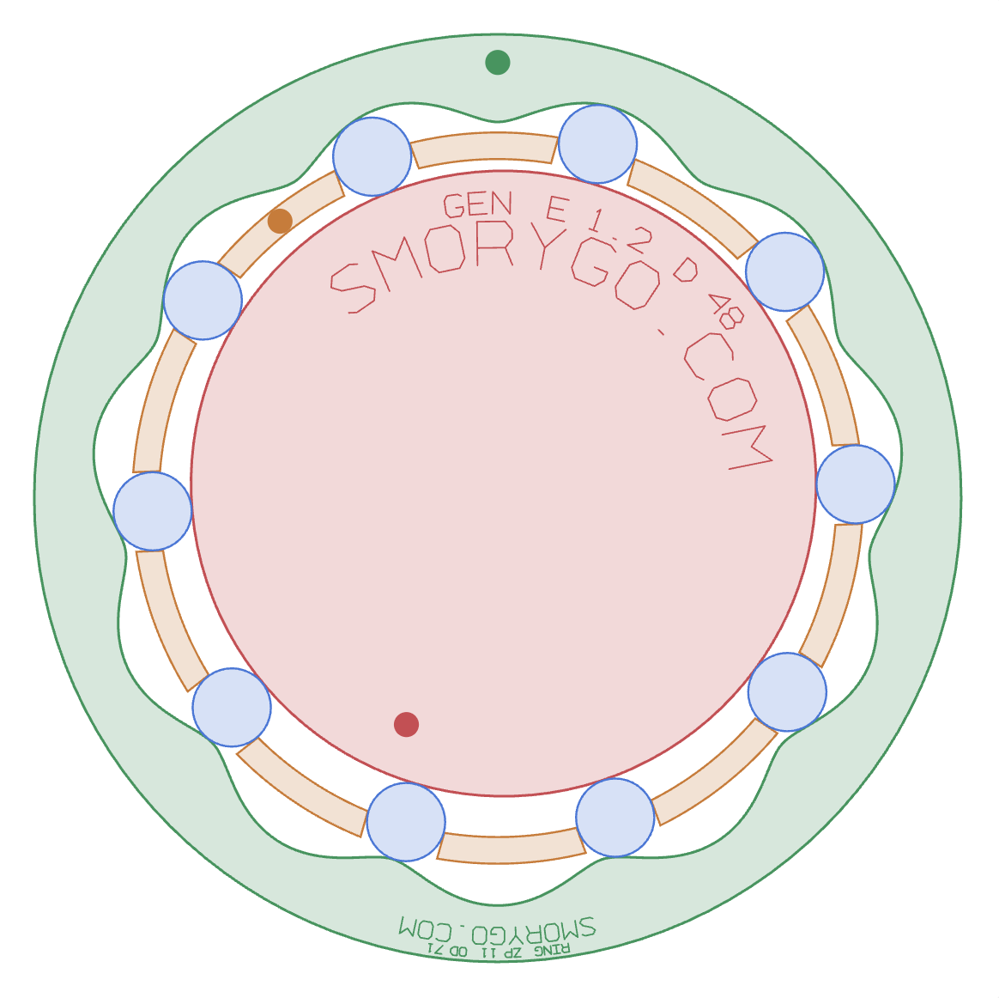
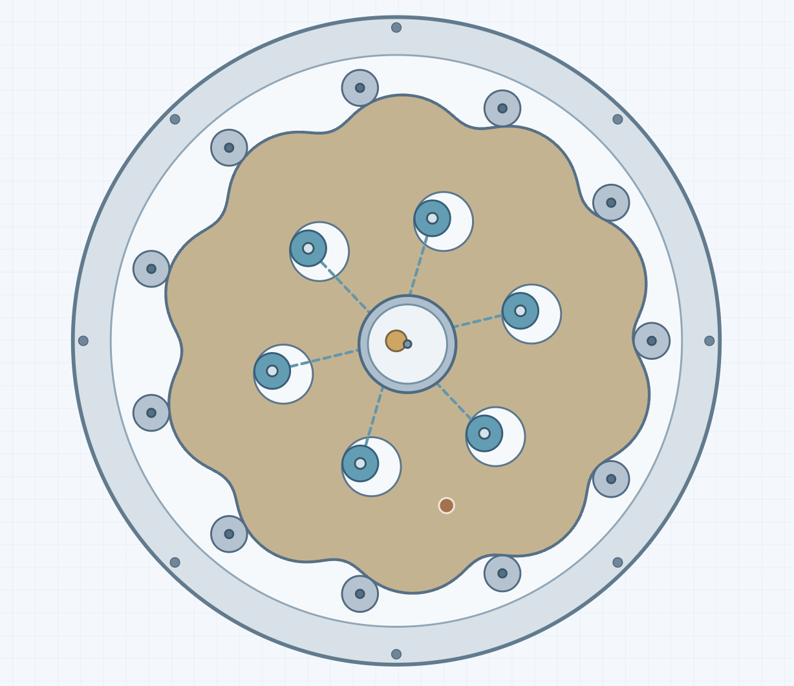
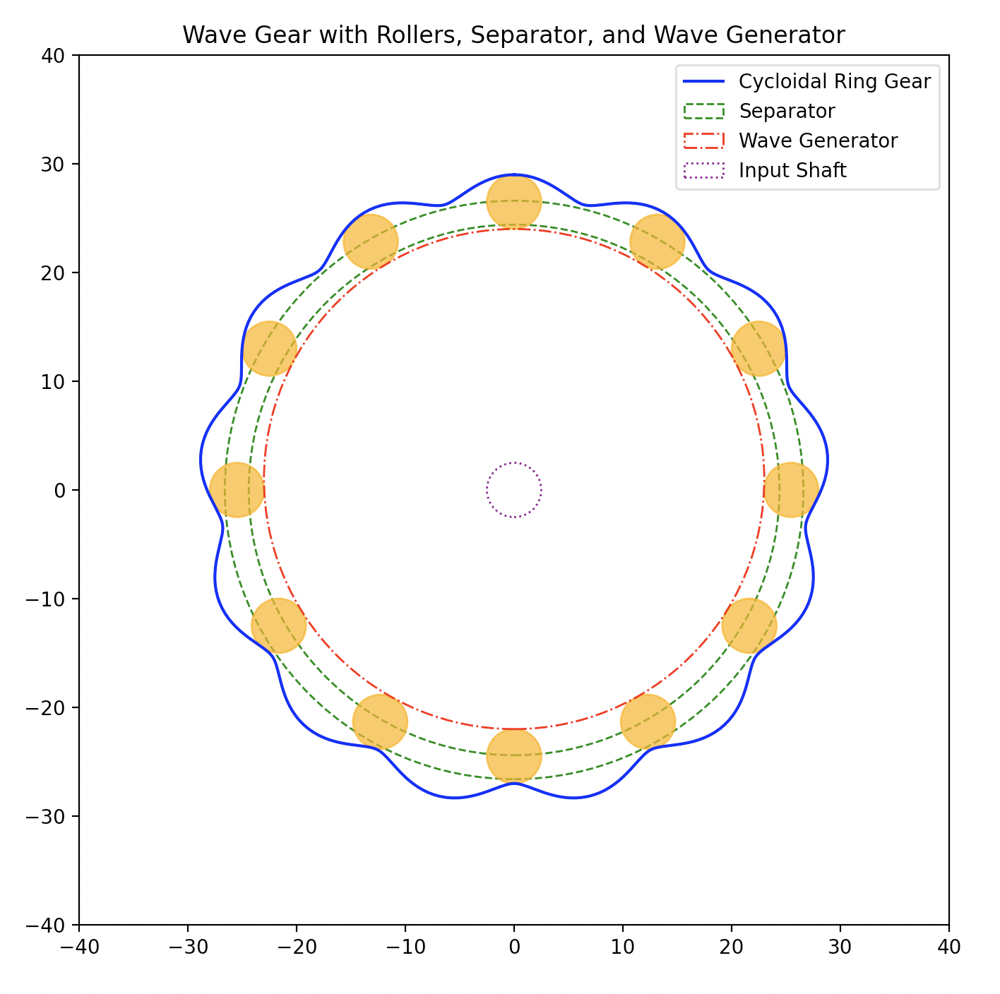
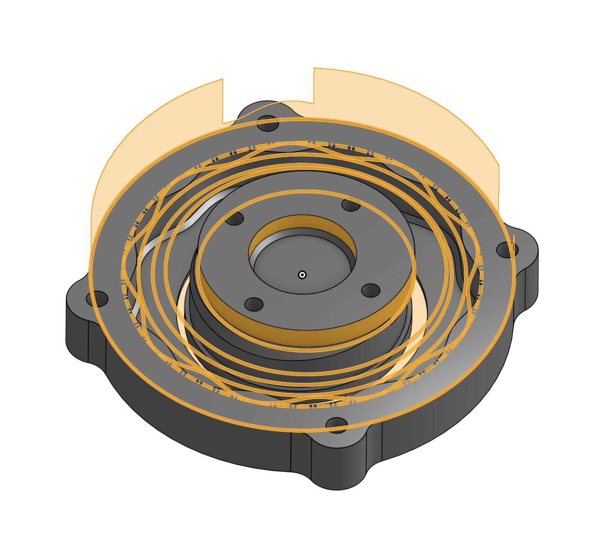
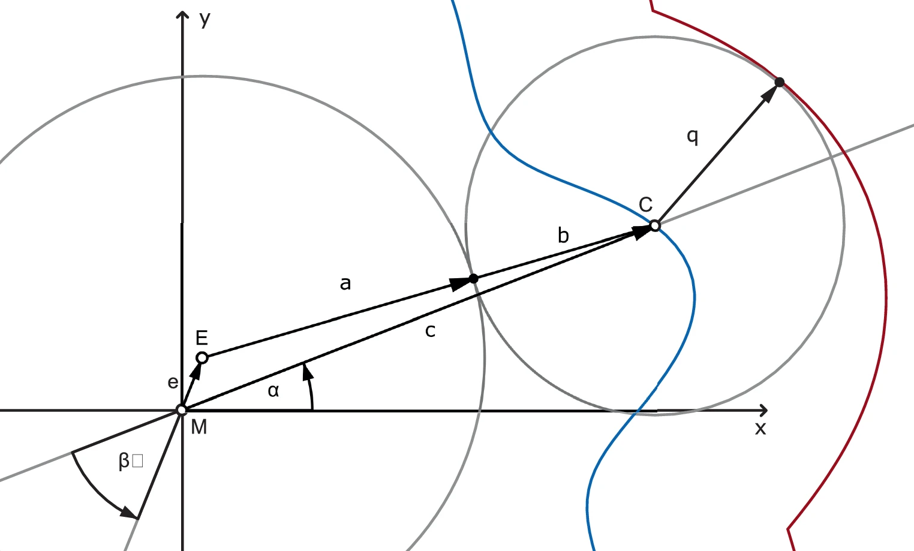
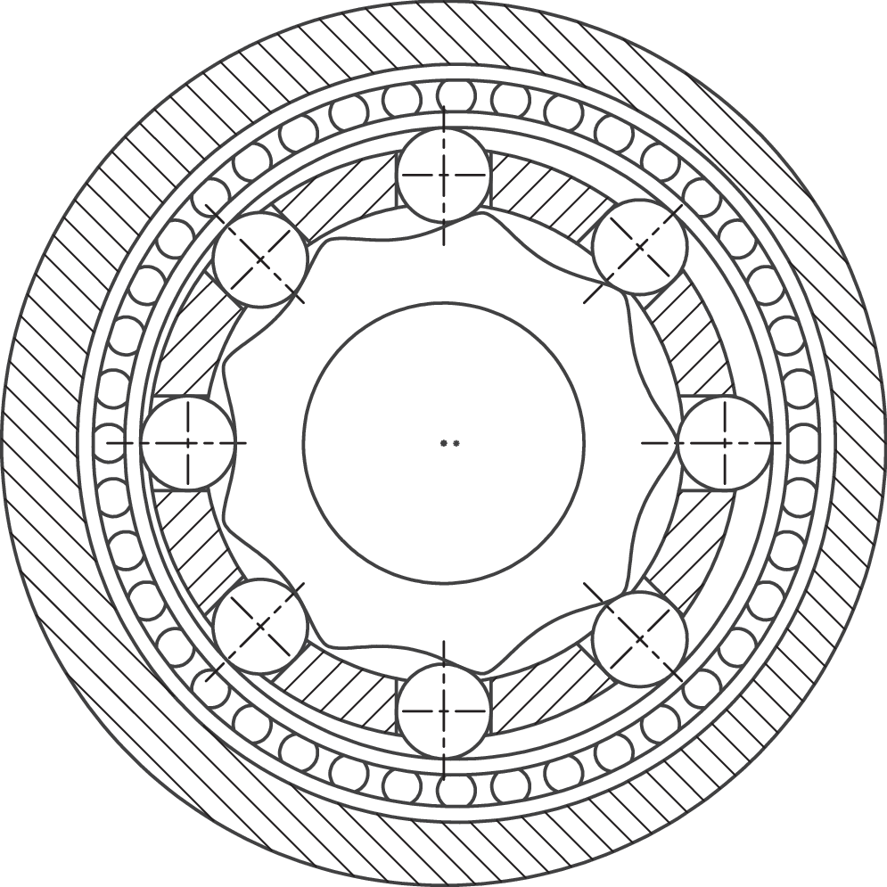
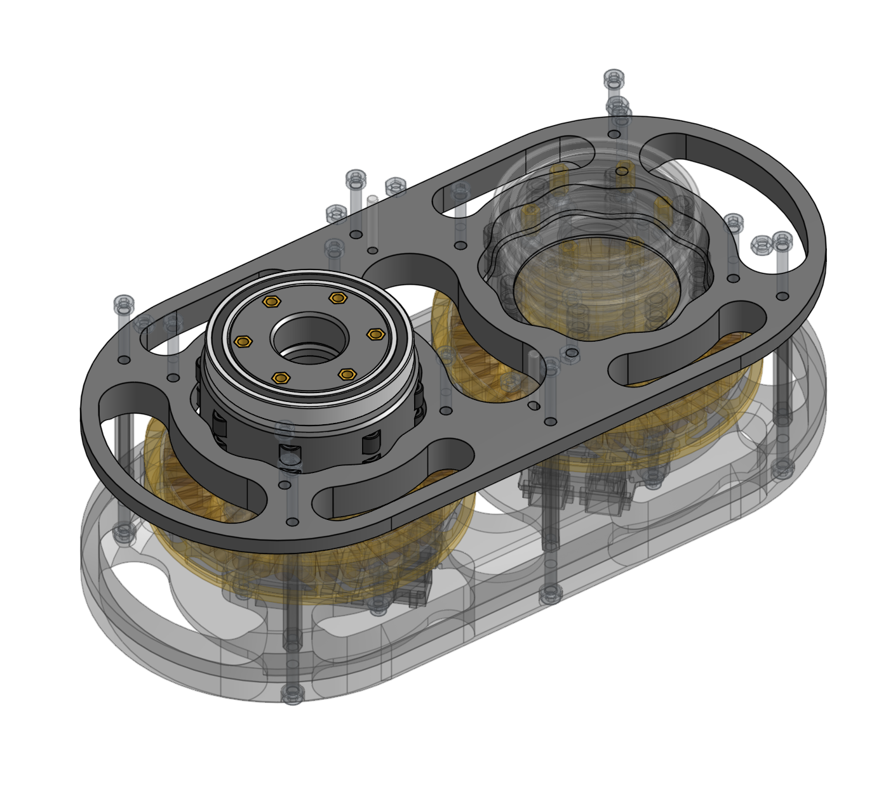
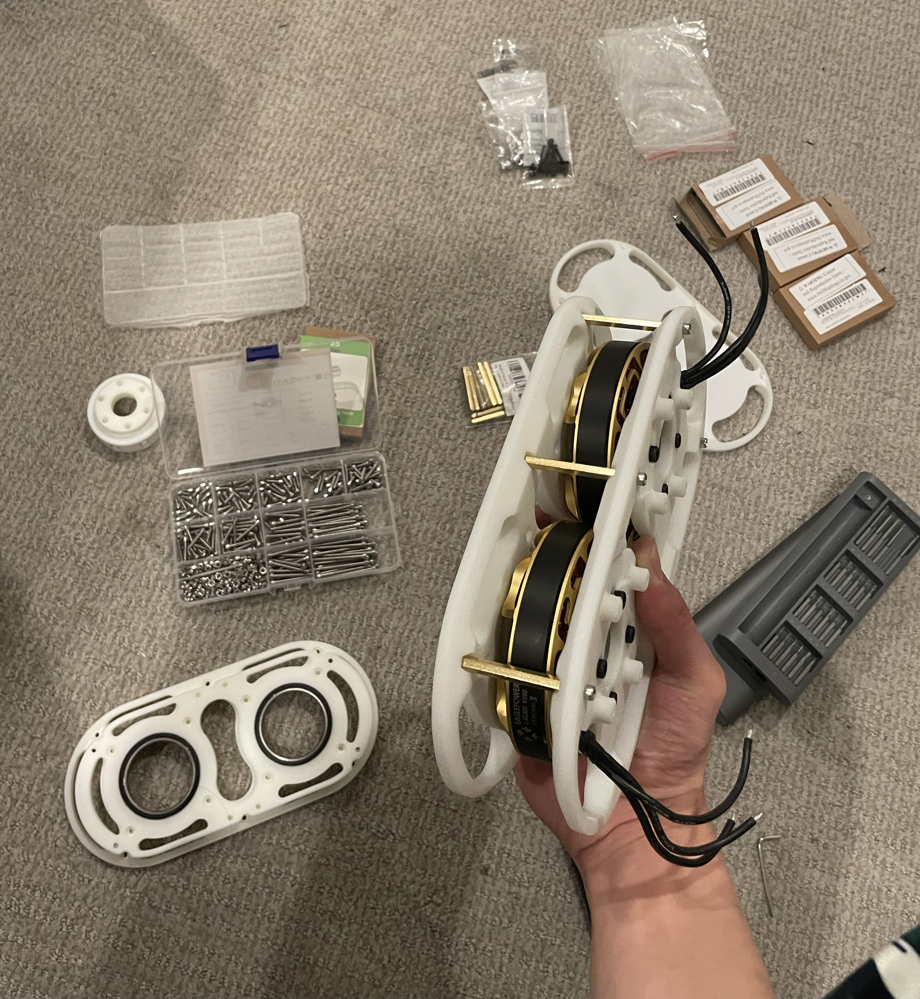
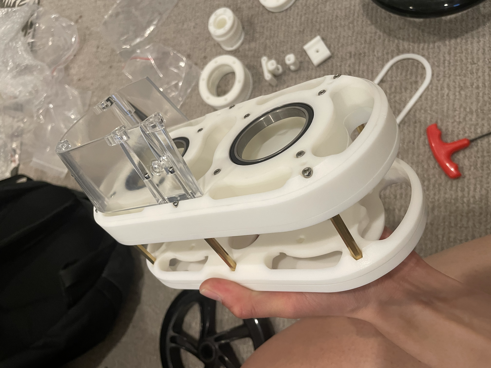
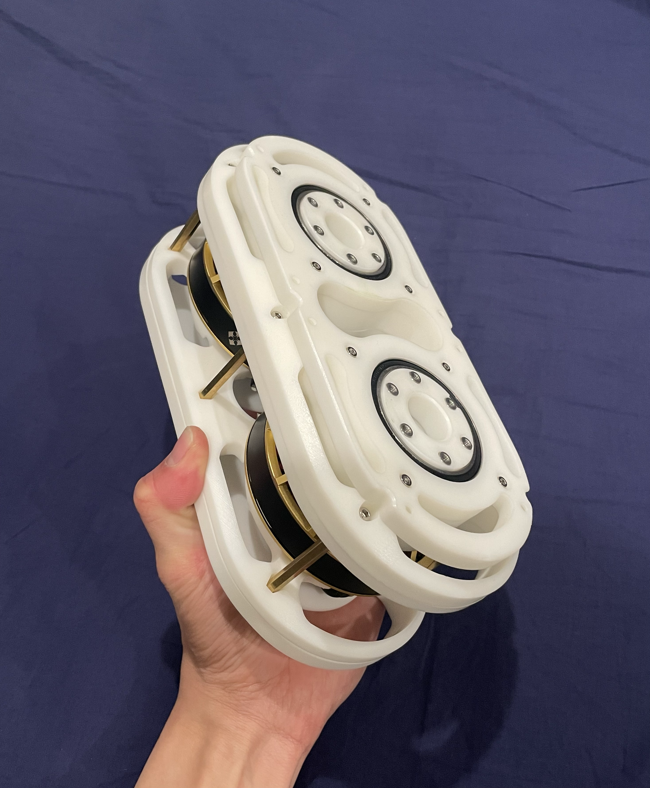

Technical write-up
↑ OverviewFollowing my exploration of capstan drives in Wheeled Biped V1 , I wanted to develop a more compact, integrated robotic actuator. I was particularly interested in alternative reduction mechanisms that could be manufactured using 3D printing while maintaining low backlash, high torque capacity, and a concentric input-output arrangement.
Development of the wave actuator ran in parallel with Wheeled Biped V2, with the mechanical requirements of each project influencing the other. The final actuator design incorporated two wave drives side by side, an arrangement driven by the packaging and actuation requirements of V2's legs.
1. Transmission Selection
1.1 Comparing Reduction Methods
With cost and manufacturing accessibility as major constraints, I wanted to develop a compact, low-reduction quasi-direct-drive (QDD) actuator using primarily 3D-printed components. Beyond minimizing backlash, I was concerned with the strength, wear resistance, and dimensional accuracy of printed transmission components.
I considered four architectures:
| Transmission | Advantages | Limitations for My Design |
|---|---|---|
| Planetary | Compact, efficient, concentric input/output | Small printed gear teeth susceptible to deformation and wear; backlash from tooth clearance |
| Strain Wave | High single-stage reduction, minimal backlash | Requires a fatigue-resistant flexspline, impractical to manufacture reliably with my FDM printer |
| Cycloidal | High torque capacity, distributed loading, low backlash potential | Eccentric disc and output coupling; potentially numerous bearings, pins, and tight-fitting components |
| Rolling-Element Eccentric (Wave) | Concentric layout, larger profile features, standard rolling elements | Less-established performance; sensitive to contact geometry and tolerances |
Strain-wave drives were ruled out early because of their flexspline requirements and typically high reduction ratios. Planetary drives were more straightforward to manufacture, but their relatively small meshing teeth raised concerns about printed-part durability and backlash.
This left cycloidal and rolling-element eccentric drives as the most promising options.
1.2 Cycloidal vs. Rolling-Element Eccentric Drives
The rolling-element eccentric drive described by Fritsch et al. (2023) shares a similar reduction principle with cycloidal drives. However, rather than using a rotating cycloidal disc engaging a ring of pins, it uses individual rolling elements driven radially by an eccentric crank. These elements follow a stationary gear profile, while a concentric cage constrains their movement and serves as the output.


-->For my application, this offered several potential advantages:
- Fewer purchased components: A simpler arrangement than the bearing-supported cycloidal designs I was considering.
- Larger printable features: Smooth gear profiles that were easier to manufacture than small meshing teeth.
- Load-bearing contacts: Aluminum rollers providing accurately manufactured contact surfaces, although the printed profile would still experience contact stress and wear.
Decision: Although both architectures could be 3D printed, I selected the rolling-element eccentric drive because its geometry seemed better suited to my available manufacturing methods. Its large printable profiles, standard rolling elements, and concentric output offered a promising alternative to conventional gearboxes, with opportunities to further reduce backlash through geometric optimization. Plus, it looked cool!
2. Wave Drive Design
2.1 Mechanism and Geometry
The transmission uses an eccentric crank to press rollers against a stationary outer profile. As described by Fritsch et al., the profile acts as a series of ramps, converting the radial forces applied by the eccentric into tangential forces that rotate the output cage. Torque is therefore transmitted through geometric contact rather than frictional traction.
An important distinction is that the eccentric does not drive every roller equally. Rollers in favorable contact positions transmit torque, while others are guided through their motion by the cage. The contact geometry determines how effectively each roller contributes to torque transmission.
The mathematical basis for this geometry is discussed by Fritsch et al. (2023): Section 3.1 derives the roller-center trajectory (Eq. 20) and obtains the outer gear profile by offsetting that trajectory along its normal (Eqs. 28–30). Korotkov et al. (2016) also derive rounded-edge profiles to address sharp transitions and associated wear. These papers provided useful geometric references; I did not independently reproduce their full derivations.
I generated the transmission geometry using an Onshape FeatureScript adapted from this YouTube tutorial . This allowed me to adjust roller dimensions, eccentricity, and clearances without manually constructing the gear profile.
The final design used an 8:1 reduction ratio and eight aluminum rollers per stage, each 6 mm in diameter and height. These parameters were refined alongside the requirements of Wheeled Biped V2, balancing packaging, roller engagement, and manufacturability.


2.2 Contact Loading and Material Selection
One of the main challenges was estimating the forces acting on the printed gear profile.
Although each stage contained eight rollers, not all would necessarily carry significant load. Fritsch et al. examine the forces acting on individual rollers and how contact pressure angles influence torque transmission. However, determining the load distribution among multiple rollers requires further analysis.
Fritsch et al. (2023), Section 3.2, provide a force-based treatment of individual roller contacts. My calculation below instead uses a simplified torque balance to estimate average tangential loading; it does not resolve the contact-normal forces or load sharing across rollers.
For my initial calculations, I assumed two effective load-bearing rollers per stage , with the complete actuator's torque shared equally between its two stages. This was a simplifying assumption rather than a verified contact count.
Using the measured 13 Nm peak static output torque as a reference load, I estimated the average tangential force per loaded roller:
With four effective load-bearing rollers across both stages and an assumed effective torque radius of 33.2 mm:
This represents an approximate tangential load, not the actual contact-normal force. The latter depends on the profile's pressure angle and may be considerably higher. Uneven load sharing could also concentrate forces on fewer rollers.


I selected JLCPCB's 9600 SLA resin primarily because it was the most accessible manufacturing material available to me. Initial contact calculations gave me reasonable confidence that it could work for a functional prototype.
A simplified Hertzian line-contact estimate suggested localized pressures on the order of 78 MPa under the assumed loading and geometry. However, the result was sensitive to contact curvature, pressure angle, and load distribution, and could not be compared directly against the resin's tensile strength to establish a safety factor.
The analysis was therefore useful as an initial assessment rather than proof of continuous load capacity. Long-term deformation, fatigue, and wear remained uncertain.
2.3 Backlash and Design Iterations
Another focus was minimizing backlash without requiring extremely tight manufacturing tolerances. Several parameters influenced this:
- Gear-profile geometry: Determines contact locations, pressure angles, and sensitivity to clearance.
- Eccentricity: Controls radial roller travel and engagement.
- Clearance and preload: Reducing clearance or increasing preload can reduce lost motion, but may increase friction and binding.
- Eccentric phasing: Offsetting stages balances internal forces and may reduce backlash through opposing contact.
I used two eccentric stages offset by 180° to reduce unbalanced forces and moments, an arrangement also discussed by Fritsch et al. Angular offsets between stages may also reduce backlash, although this depends on the contact geometry and clearances.
Through several iterations, I refined the profile and clearances to improve engagement while maintaining smooth operation.
To evaluate backlash, I attached a laser pointer to the output and measured its angular displacement on a wall at a known distance. This provided a simple way to quantify lost motion during direction reversals.
3. Mechanical Design
For the motor, I selected an Eaglepower 8308 brushless outrunner . Its pancake geometry and large rotor diameter offered high torque density, meeting the requirements I had calculated for Wheeled Biped V2. Its popularity in hobby robotics also meant documentation and troubleshooting resources were readily available.
I paired it with a moteus r4 controller , an affordable, open-source platform offering field-oriented control (FOC) and encoder feedback. This allowed me to focus on the mechanical transmission rather than developing custom motor-control electronics.




4. Retrospective and Lessons Learned
The completed actuator achieved 13 Nm peak static output torque , approximately 250 rpm maximum output speed , and less than 0.5° backlash . While promising, testing was limited as I moved quickly toward integrating the actuator into Wheeled Biped V2.
4.1 What I Would Do Differently
- Characterization: More thoroughly test efficiency, stiffness, continuous torque, and wear.
- Simulation: Use contact analysis and FEA to optimize material usage and identify stress concentrations, especially between the metal rollers and plastic surfaces.
- Prototyping: Validate a single actuator before committing to the dual-actuator design.
- System integration: Consider mounting, wiring, and packaging earlier to reduce the actuator's overall size.
- Encoder adjustment: Improve the encoder mounting and alignment mechanism for easier, more repeatable assembly.
- Transmission selection: In retrospect, a cycloidal drive may have been more practical, given the greater availability of research, design resources, and reference implementations that could have accelerated development.